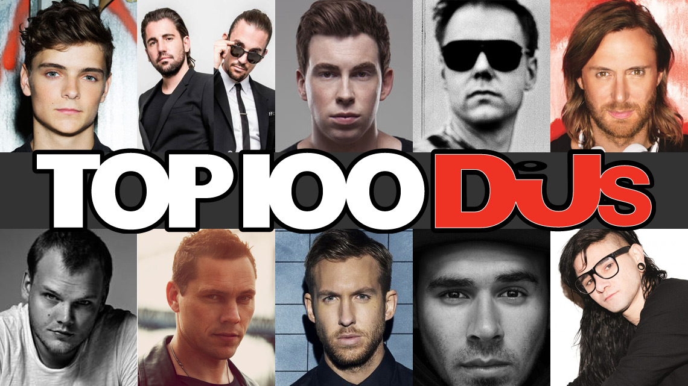

WHO'S NEXT NO.1??
ダンスミュージック・ファン＆関係者の投票によって世界一の人気DJを決める「DJ Mag」の人気企画「TOP100DJs」。その投票数は100万票超え、ファンの声が反映されたランキングとして知られていますが、今年もいよいよ投票開始！ そこで今回はトップ10を編集部で予想してみました。
イギリス・ロンドンのダンス・ミュージック誌「DJ Mag」が毎年発表している「TOP100DJs」。 これはファンの投票によって世界のDJを格付けする、いわばDJ選挙ともいえる名物企画です。 すでに7月より投票がスタート、1人につき5組の推しDJを選ぶシステムで、複数投票は不可。 今年からはDJ Mag日本版で、日本語での投票も可能となっています。投票はイギリス時間9月14日まで。 誰が上位となってもおかしくないランキングですが、今回EDM MAXX編集部ではこの1年のDJたちの活躍や過去のランキングでの実績などを鑑み、トップ10入りしそうな人気アーティストを予想してみました。
01.Matin Garrix
“Animals”の大ヒットでその名を轟かせたオランダ出身、現在20歳のDJ・プロデューサー。 アテネ五輪でのティエストのパフォーマンスに憧れDJを目指すようになったという彼ですが、言わずもがなEDM界での人気は絶大。 「TOP100DJs」にも2013年初登場40位にランクインして以降、2014年は４位と急上昇。そして昨年はトップ３入り。 この１年で名門レーベルSpinnin’ Recordsから独立＆自身のレーベルSTMPD RCRDSを設立し話題になり、さらにはジャスティン・ビーバーとコラボを進めていたり、「EDC」でマシュメロのステージに登場したり、世界最大のゲームショー「E3 2016」に新曲“Oops”を提供したりと、注目を集めるトピックが盛りだくさん。 昨年も下馬評では１位との声があがってましたが、今年こそ悲願の１位なるか！
02. Dimitri Vegas & Like Mike
“Animals”の大ヒットでその名を轟かせたオランダ出身、現在20歳のDJ・プロデューサー。 アテネ五輪でのティエストのパフォーマンスに憧れDJを目指すようになったという彼ですが、言わずもがなEDM界での人気は絶大。 「TOP100DJs」にも2013年初登場40位にランクインして以降、2014年は４位と急上昇。そして昨年はトップ３入り。 この１年で名門レーベルSpinnin’ Recordsから独立＆自身のレーベルSTMPD RCRDSを設立し話題になり、さらにはジャスティン・ビーバーとコラボを進めていたり、「EDC」でマシュメロのステージに登場したり、世界最大のゲームショー「E3 2016」に新曲“Oops”を提供したりと、注目を集めるトピックが盛りだくさん。 昨年も下馬評では１位との声があがってましたが、今年こそ悲願の１位なるか！
03.Hardwell
“Animals”の大ヒットでその名を轟かせたオランダ出身、現在20歳のDJ・プロデューサー。 アテネ五輪でのティエストのパフォーマンスに憧れDJを目指すようになったという彼ですが、言わずもがなEDM界での人気は絶大。 「TOP100DJs」にも2013年初登場40位にランクインして以降、2014年は４位と急上昇。そして昨年はトップ３入り。 この１年で名門レーベルSpinnin’ Recordsから独立＆自身のレーベルSTMPD RCRDSを設立し話題になり、さらにはジャスティン・ビーバーとコラボを進めていたり、「EDC」でマシュメロのステージに登場したり、世界最大のゲームショー「E3 2016」に新曲“Oops”を提供したりと、注目を集めるトピックが盛りだくさん。 昨年も下馬評では１位との声があがってましたが、今年こそ悲願の１位なるか！
04.Armin Van Buuren
“Animals”の大ヒットでその名を轟かせたオランダ出身、現在20歳のDJ・プロデューサー。 アテネ五輪でのティエストのパフォーマンスに憧れDJを目指すようになったという彼ですが、言わずもがなEDM界での人気は絶大。 「TOP100DJs」にも2013年初登場40位にランクインして以降、2014年は４位と急上昇。そして昨年はトップ３入り。 この１年で名門レーベルSpinnin’ Recordsから独立＆自身のレーベルSTMPD RCRDSを設立し話題になり、さらにはジャスティン・ビーバーとコラボを進めていたり、「EDC」でマシュメロのステージに登場したり、世界最大のゲームショー「E3 2016」に新曲“Oops”を提供したりと、注目を集めるトピックが盛りだくさん。 昨年も下馬評では１位との声があがってましたが、今年こそ悲願の１位なるか！
05.David Guetta
“Animals”の大ヒットでその名を轟かせたオランダ出身、現在20歳のDJ・プロデューサー。 アテネ五輪でのティエストのパフォーマンスに憧れDJを目指すようになったという彼ですが、言わずもがなEDM界での人気は絶大。 「TOP100DJs」にも2013年初登場40位にランクインして以降、2014年は４位と急上昇。そして昨年はトップ３入り。 この１年で名門レーベルSpinnin’ Recordsから独立＆自身のレーベルSTMPD RCRDSを設立し話題になり、さらにはジャスティン・ビーバーとコラボを進めていたり、「EDC」でマシュメロのステージに登場したり、世界最大のゲームショー「E3 2016」に新曲“Oops”を提供したりと、注目を集めるトピックが盛りだくさん。 昨年も下馬評では１位との声があがってましたが、今年こそ悲願の１位なるか！
06.Avicii
“Animals”の大ヒットでその名を轟かせたオランダ出身、現在20歳のDJ・プロデューサー。 アテネ五輪でのティエストのパフォーマンスに憧れDJを目指すようになったという彼ですが、言わずもがなEDM界での人気は絶大。 「TOP100DJs」にも2013年初登場40位にランクインして以降、2014年は４位と急上昇。そして昨年はトップ３入り。 この１年で名門レーベルSpinnin’ Recordsから独立＆自身のレーベルSTMPD RCRDSを設立し話題になり、さらにはジャスティン・ビーバーとコラボを進めていたり、「EDC」でマシュメロのステージに登場したり、世界最大のゲームショー「E3 2016」に新曲“Oops”を提供したりと、注目を集めるトピックが盛りだくさん。 昨年も下馬評では１位との声があがってましたが、今年こそ悲願の１位なるか！
07.Calvin Harris